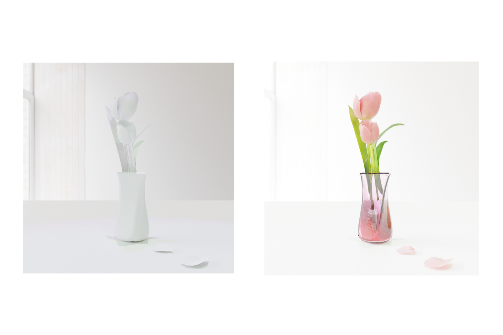

About me
わたしについて
井出 美咲 (いで みさき)
中学・高校時にプログラミングに関心を持ち、大学では情報処理分野の中でもWebやデータベース、デザインからCG
まで幅広く学びたいという思いから情報デザイン専攻に進学。
現在は主にJavaScriptを用いたWebアプリケーションの開発に取り組んでいます。
プログラミングを学んでよかったと思うことは、コードが書けるということが日常の中での思い付きや些細なアイデアを実現する手段になるということです。
毎日を少し楽しく、少し便利に。IT技術を通して人の役に立てる貢献をしたいと考えています。
- 所属
-
大妻女子大学社会情報学部社会情報学科情報デザイン専攻
- ゼミナール
-
Web情報処理ゼミ（藤村ゼミ）
- 資格
-
基本情報技術者試験 合格
-
TOEIC Listening&Reading 675点
- 趣味
-
CG制作、写真
趣味のCG フリーソフトblenderで作ったお花です！
中秋の名月 一眼カメラで月の写真を撮ることも好きです